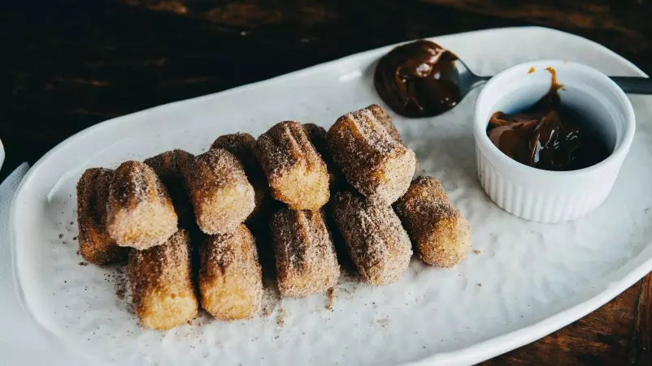

Mini Churros

Ingredientes
- Una taza de harina.
- 3 huevos.
- Una taza de agua.
- 1/2 cdta de sal.
- Una pizca de azúcar.
- 70 g de manteca.
- Azúcar, canela y cacao amargo para terminar/li>
- Dulce de leche caliente o salsa de dulce de leche, c/n.
Procedimiento
- Colocar en una olla el agua junto a la sal, el azúcar y la manteca.
- Cuando rompe hervor, volcar la harina y revolver hasta formar una pelota, sin grumos.
- Dejar que enfríe la masa.
- Agregar de a uno los huevos, batiendo e integrando muy bien.
- Colocar la masa en una churrera o manga con pico.
- Freír en aceite bien caliente hasta que estén dorados.
- Retirar, secar el exceso de aceite y pasar por la mezcla de azúcar, canela y cacao.
- Calentar el chocolate hasta que derrita en microondas y el dulce de leche unos 3 minutos.
- Disfrutar de esta maravilla dipeando sobre las salsas.